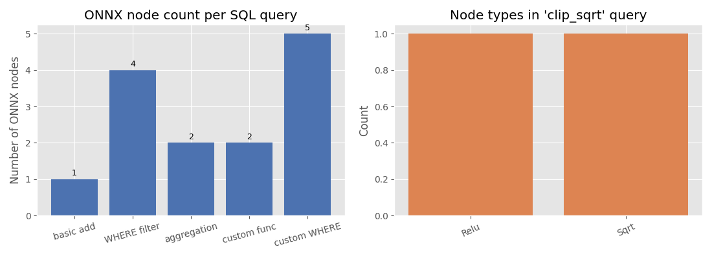
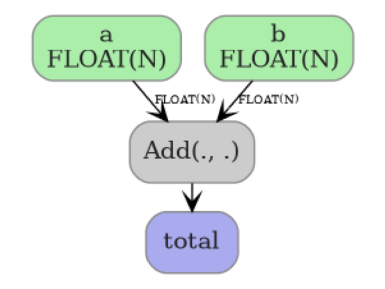
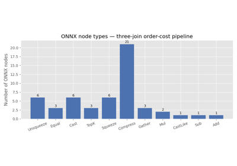

Note
Go to the end to download the full example code.
SQL queries to ONNX#
sql_to_onnx() converts a SQL query string into a
self-contained onnx.ModelProto. Each referenced column becomes a
separate 1-D ONNX input, matching the columnar representation used in
tabular data pipelines.
This example covers:
Basic SELECT — column pass-through and arithmetic.
WHERE clause — row filtering with comparison predicates.
Aggregations —
SUM,AVG,MIN,MAXin the SELECT list.Custom Python functions — user-defined numpy functions called directly from SQL via the
custom_functionsparameter; the function body is traced to ONNX nodes usingtrace_numpy_function().Graph visualization — rendering the produced ONNX model with
plot_dot().
See SQL-to-ONNX Converter Design for the full design discussion.
import numpy as np
import onnxruntime
from yobx.helpers.onnx_helper import pretty_onnx
from yobx.reference import ExtendedReferenceEvaluator
from yobx.sql import sql_to_onnx
Helper#
A small helper runs a model with both the reference evaluator and onnxruntime and verifies the results agree.
def run(onx, feeds):
"""Run *onx* through the reference evaluator and ORT; return ref outputs."""
ref = ExtendedReferenceEvaluator(onx)
ref_outputs = ref.run(None, feeds)
sess = onnxruntime.InferenceSession(
onx.SerializeToString(), providers=["CPUExecutionProvider"]
)
ort_outputs = sess.run(None, feeds)
for r, o in zip(ref_outputs, ort_outputs):
np.testing.assert_allclose(r, o, rtol=1e-5, atol=1e-6)
return ref_outputs
1. Basic SELECT#
The simplest query selects two columns and computes their element-wise sum. Each column in input_dtypes becomes a separate ONNX graph input.
dtypes = {"a": np.float32, "b": np.float32}
a = np.array([1.0, 2.0, 3.0], dtype=np.float32)
b = np.array([4.0, 5.0, 6.0], dtype=np.float32)
onx_add = sql_to_onnx("SELECT a + b AS total FROM t", dtypes)
(total,) = run(onx_add, {"a": a, "b": b})
print("a + b =", total)
# Inspect the ONNX graph inputs — one per column
print("ONNX inputs:", [inp.name for inp in onx_add.graph.input])
a + b = [5. 7. 9.]
ONNX inputs: ['a', 'b']
The model
print(pretty_onnx(onx_add))
opset: domain='' version=21
input: name='a' type=dtype('float32') shape=['N']
input: name='b' type=dtype('float32') shape=['N']
Add(a, b) -> total
output: name='total' type='NOTENSOR' shape=None
2. WHERE clause (row filtering)#
The WHERE clause is translated to a boolean mask followed by
Compress nodes that select only the matching rows from every column.
rows where a > 1.5:
a = [2. 3.]
b = [5. 6.]
The model
print(pretty_onnx(onx_where))
opset: domain='' version=21
input: name='a' type=dtype('float32') shape=['N']
input: name='b' type=dtype('float32') shape=['N']
init: name='filter_mask_r_lit' type=float32 shape=(1,) -- array([1.5], dtype=float32)
CastLike(filter_mask_r_lit, a) -> _onx_castlike_filter_mask_r_lit
Greater(a, _onx_castlike_filter_mask_r_lit) -> _onx_greater_a
Compress(a, _onx_greater_a, axis=0) -> output_0
Compress(b, _onx_greater_a, axis=0) -> output_1
output: name='output_0' type='NOTENSOR' shape=None
output: name='output_1' type='NOTENSOR' shape=None
3. Aggregation functions#
SUM, AVG, MIN, and MAX in the SELECT list are emitted as
ReduceSum, ReduceMean, ReduceMin, and ReduceMax ONNX nodes.
SUM(a) = 6.0 (expected 6.0)
AVG(b) = 5.0 (expected 5.0)
The model
print(pretty_onnx(onx_agg))
opset: domain='' version=21
input: name='a' type=dtype('float32') shape=['N']
input: name='b' type=dtype('float32') shape=['N']
init: name='select_s_axes' type=int64 shape=(1,) -- array([0])
ReduceMean(b, select_s_axes, keepdims=0) -> m
ReduceSum(a, select_s_axes, keepdims=0) -> s
output: name='s' type='NOTENSOR' shape=None
output: name='m' type='NOTENSOR' shape=None
4. WHERE + arithmetic SELECT#
Filters and expressions can be combined freely.
onx_combined = sql_to_onnx("SELECT a + b AS total FROM t WHERE a > 0", dtypes)
a2 = np.array([1.0, -2.0, 3.0], dtype=np.float32)
b2 = np.array([4.0, 5.0, 6.0], dtype=np.float32)
(total2,) = run(onx_combined, {"a": a2, "b": b2})
print("a + b WHERE a > 0 =", total2)
np.testing.assert_allclose(total2, np.array([5.0, 9.0], dtype=np.float32))
a + b WHERE a > 0 = [5. 9.]
The model
print(pretty_onnx(onx_combined))
opset: domain='' version=21
input: name='a' type=dtype('float32') shape=['N']
input: name='b' type=dtype('float32') shape=['N']
init: name='filter_mask_r_lit' type=int64 shape=(1,) -- array([0])
CastLike(filter_mask_r_lit, a) -> _onx_castlike_filter_mask_r_lit
Greater(a, _onx_castlike_filter_mask_r_lit) -> _onx_greater_a
Compress(a, _onx_greater_a, axis=0) -> _onx_compress_a
Compress(b, _onx_greater_a, axis=0) -> _onx_compress_b
Add(_onx_compress_a, _onx_compress_b) -> total
output: name='total' type='NOTENSOR' shape=None
5. Custom Python functions#
Any numpy-backed Python function can be called by name directly in SQL.
Pass it as a custom_functions dictionary entry: the key is the
function name as it appears in the SQL string, and the value is the
callable.
Under the hood trace_numpy_function() replaces the
real inputs with lightweight proxy objects that record every numpy
operation as an ONNX node, so the resulting graph is equivalent to
running the Python function at inference time.
def clip_sqrt(x):
"""Safe square root: sqrt(max(x, 0))."""
return np.sqrt(np.maximum(x, np.float32(0)))
dtypes_a = {"a": np.float32}
a3 = np.array([4.0, -1.0, 9.0, 0.0], dtype=np.float32)
onx_func = sql_to_onnx(
"SELECT clip_sqrt(a) AS r FROM t", dtypes_a, custom_functions={"clip_sqrt": clip_sqrt}
)
(r,) = run(onx_func, {"a": a3})
expected = clip_sqrt(a3)
print("clip_sqrt(a) =", r)
np.testing.assert_allclose(r, expected, atol=1e-6)
print("clip_sqrt ✓")
clip_sqrt(a) = [2. 0. 3. 0.]
clip_sqrt ✓
The model
print(pretty_onnx(onx_func))
opset: domain='' version=21
input: name='a' type=dtype('float32') shape=['N']
Relu(a) -> _onx_max_a
Sqrt(_onx_max_a) -> r
output: name='r' type='NOTENSOR' shape=None
6. Custom function in WHERE clause#
Custom functions also work in WHERE predicates.
onx_where_func = sql_to_onnx(
"SELECT a FROM t WHERE clip_sqrt(a) > 1", dtypes_a, custom_functions={"clip_sqrt": clip_sqrt}
)
(a_filt2,) = run(onx_where_func, {"a": a3})
print("a WHERE clip_sqrt(a) > 1 =", a_filt2)
np.testing.assert_allclose(a_filt2, a3[clip_sqrt(a3) > 1], atol=1e-6)
print("WHERE custom function ✓")
a WHERE clip_sqrt(a) > 1 = [4. 9.]
WHERE custom function ✓
The model
print(pretty_onnx(onx_where_func))
opset: domain='' version=21
input: name='a' type=dtype('float32') shape=['N']
init: name='filter_mask_r_lit' type=int64 shape=(1,) -- array([1])
Relu(a) -> _onx_max_a
Sqrt(_onx_max_a) -> _onx_sqrt_max_a
CastLike(filter_mask_r_lit, _onx_sqrt_max_a) -> _onx_castlike_filter_mask_r_lit
Greater(_onx_sqrt_max_a, _onx_castlike_filter_mask_r_lit) -> _onx_greater_filter_mask_l_clip_sqrt
Compress(a, _onx_greater_filter_mask_l_clip_sqrt, axis=0) -> output_0
output: name='output_0' type='NOTENSOR' shape=None
7. Two-argument custom function#
Functions with more than one argument receive one tensor per argument.
def weighted_sum(x, y, alpha=0.5):
"""Compute alpha * x + (1 - alpha) * y."""
return alpha * x + (np.float32(1) - np.float32(alpha)) * y
dtypes_ab = {"a": np.float32, "b": np.float32}
onx_ws = sql_to_onnx(
"SELECT wsum(a, b) AS ws FROM t", dtypes_ab, custom_functions={"wsum": weighted_sum}
)
(ws,) = run(onx_ws, {"a": a, "b": b})
expected_ws = weighted_sum(a, b)
print("weighted_sum(a, b) =", ws)
np.testing.assert_allclose(ws, expected_ws, atol=1e-6)
print("Two-argument custom function ✓")
weighted_sum(a, b) = [2.5 3.5 4.5]
Two-argument custom function ✓
The model
print(pretty_onnx(onx_ws))
opset: domain='' version=21
input: name='a' type=dtype('float32') shape=['N']
input: name='b' type=dtype('float32') shape=['N']
init: name='init1_s_' type=float32 shape=() -- array([0.5], dtype=float32)-- Opset.make_node.1/Small##Opset.make_node.1/Small
Mul(init1_s_, a) -> _onx_mul_init1_s_
Mul(init1_s_, b) -> _onx_mul_init1_s_2
Add(_onx_mul_init1_s_, _onx_mul_init1_s_2) -> ws
output: name='ws' type='NOTENSOR' shape=None
8. Visualise the ONNX node types#
The bar chart below compares how many ONNX nodes each query produces and which node types appear in the custom-function query.
import matplotlib.pyplot as plt # noqa: E402
models = {
"basic add": onx_add,
"WHERE filter": onx_where,
"aggregation": onx_agg,
"custom func": onx_func,
"custom WHERE": onx_where_func,
}
node_counts = [len(list(m.graph.node)) for m in models.values()]
fig, axes = plt.subplots(1, 2, figsize=(11, 4))
# Left: node count per query
ax = axes[0]
bars = ax.bar(list(models.keys()), node_counts, color="#4c72b0")
ax.set_ylabel("Number of ONNX nodes")
ax.set_title("ONNX node count per SQL query")
for bar, count in zip(bars, node_counts):
ax.text(
bar.get_x() + bar.get_width() / 2,
bar.get_height() + 0.05,
str(count),
ha="center",
va="bottom",
fontsize=9,
)
ax.tick_params(axis="x", labelrotation=15)
# Right: node types in custom-function model
op_types: dict[str, int] = {}
for node in onx_func.graph.node:
op_types[node.op_type] = op_types.get(node.op_type, 0) + 1
ax2 = axes[1]
ax2.bar(list(op_types.keys()), list(op_types.values()), color="#dd8452")
ax2.set_ylabel("Count")
ax2.set_title("Node types in 'clip_sqrt' query")
ax2.tick_params(axis="x", labelrotation=25)
plt.tight_layout()
plt.show()

9. Display the ONNX model graph#
plot_dot() renders the ONNX graph as an image so you can
inspect nodes, edges, and tensor shapes at a glance. Here we visualize the
basic SELECT a + b query — a single Add node connecting two inputs
to one output.
from yobx.doc import plot_dot # noqa: E402
plot_dot(onx_add)

Total running time of the script: (0 minutes 0.222 seconds)
Related examples

Three Consecutive Joins to ONNX (pandas and polars-style)